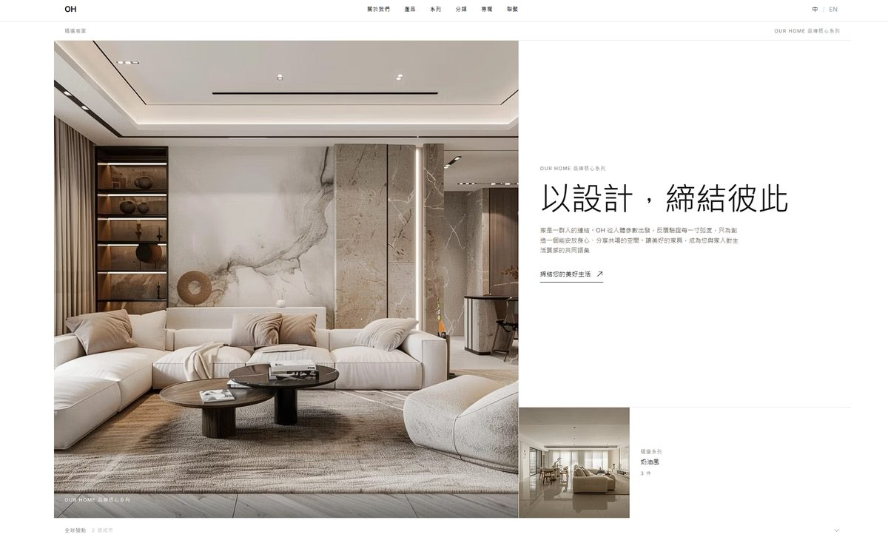
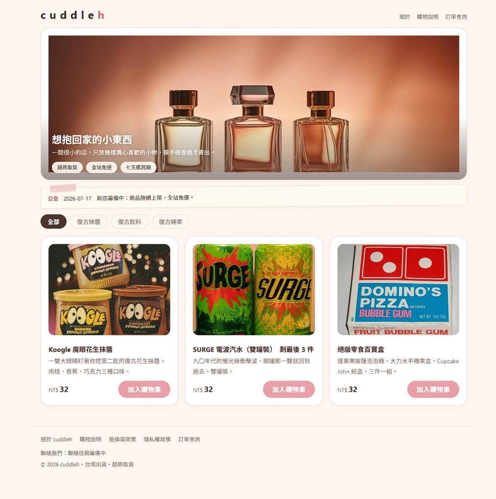
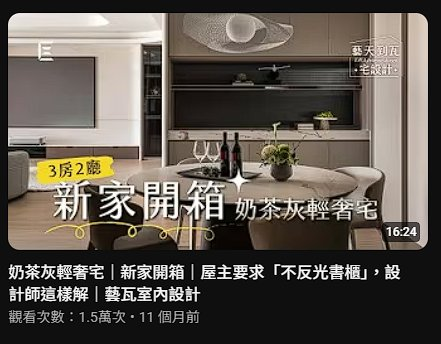
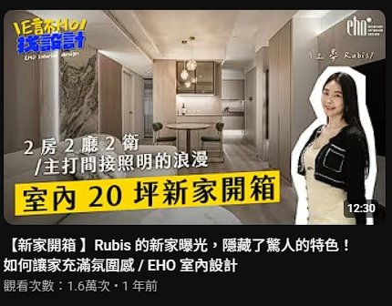
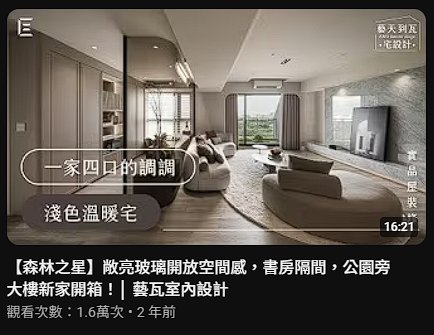
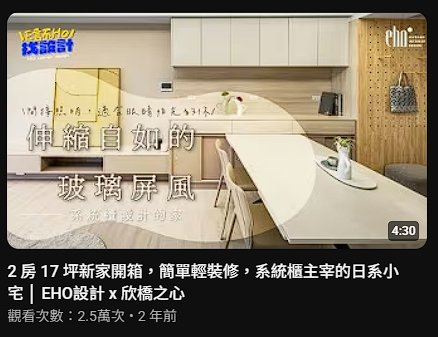

我是楊旻瑾，東海中文系畢業。我原本靠文字吃飯，後來一路做了社群、SEO、廣告、影片，也帶過一個團隊。 這頁不放那些成長數字（那些在別的頁面裡），我只想老實寫下，這些年我實際上都在想什麼、怎麼做事。
我最早是所謂的社群小編，經手過的粉專屬性很雜——補習班、室內設計都有。前一份工作主要經營室內設計，後期還接手了家具產業。
初期人手不足，大多事情都由我一個人處理，所以我乾脆用一週七天來切分主題：比如週一、週三固定處理社群，其他日子安排別的事情。貼文的比例，大約 80% 圖文、10% 限動、10% 短影音。
因為我本來就擅長處理文字，經營社群時，比起寫短短一句，我更喜歡把內容寫長一點。圖片倒是不太需要煩惱——室內設計公司會請攝影師拍空間照，而空間本身就很會說話，光是那個場景就能表達美感，多數時候不必額外修圖；真要處理，我用 Canva。短影音崛起後，我也用 CapCut 剪，多半只是簡單接一接畫面、上字幕，重點是確保節奏不拖沓。
經營一個帳號，我最在意的是它聽起來像不像「同一個人」。我給室內設計這個帳號的設定是：一間冷靜、但不時透露出溫度的公司。冷靜是為了專業感，溫度是為了讓人放下戒心。這套心法我拆成三條：
每一則貼文，我都會追蹤發布後第 7 天的數據，主要看互動率。長期經營下來，我們把互動率高於 3%的貼文定義成「好貼文」，然後回頭研究它為什麼好，把心得用在下一批貼文上。短影音則看觀看數，特別去拆解那些破 10,000次觀看的片子。對我來說，數據不是拿來交報告的，是拿來複製成功的。
我不是把 AI 當噱頭的人。這幾年我最有感的，是它實實在在幫我省下了時間與成本。
第一件事是文案風格的複製。我把累積下來的文案餵給 AI，讓它學會我們的語氣；之後只要交給它那些「不能出錯、也不能亂改」的硬資料——坪數、建案名稱、幾房幾廳——它就能產出一篇合格的貼文或作品介紹。實務上，我通常先寫官網的作品介紹，再改寫成貼文版本。到後期，連設計風格的定調都能交給 AI——除非設計師明確說「這就是某某風格」，否則多模態 AI 光看照片，就能辨識畫面裡有什麼、推敲出風格語彙，再套上它學過的口吻寫出來。
更震撼我的是家具電商這一塊。大型家具——尤其沙發——要送進攝影棚拍照，運費和時間都是成本。後來我們的做法是：跟廠商拿三個角度的簡易照片，用 AI 直接生成家具的各個角度、細節特寫，甚至把它「放進」各種不同風格的空間情境裡。原本要一整組攝影棚才能做到的事，現在幾張素材就能展開。那一刻我真的感受到，AI 對電商的幫助是前所未有的。
前公司的官網由專業的網站公司開發，我用過他們的後台。跟多數網站公司一樣，功能大多是寫死的——要加新功能，就得另外報價請工程師處理。我在這裡的職責，主要是維護官網內容，以及盯著網站表單進來的洽詢。
要分析數據，我會進 GA4 看事情有沒有往好的方向走。最常看的是每月流量，以及把流量拆成自然流量與付費流量；如果剛好有辦活動，我還會留意帶了 UTM 的那段流量表現。
這個官網本來就是為 SEO 而生的，所以經營 SEO 是我的另一個重心。方法說穿了很樸實——每個月固定新增 8 篇左右的 SEO 文章。大多是單篇，但偶爾我們會做系列文，再匯集到一個總覽頁；經過測試，這種系列文的效果明顯優於單篇。
挑關鍵字時，我會先看兩件事：這個字有沒有流量，以及搜這個字的人心裡在想什麼。如果只是單純想找資訊，優先度對我來說會比較低——因為缺乏購買動機。我要的是那些帶著意圖來的人。
寫的時候，我基本遵循 Google 提倡的 E-E-A-T 原則，用正確的 H1／H2／H3 搭好結構。我還有個習慣：力求每一段都能單獨看懂，不依賴上下文也讀得通。這麼做的原因很現實——AI 特別喜歡引用這種自成一段的內容。因為文章需求量大，我也把部分稿子外包給寫手，自己負責審稿，字數大概控制在 一千字 上下。
後來公司要發展家具產業，我就自己架了一個家具購物網站：用 Cloudways 搭配 WordPress，金流用 WooCommerce 接綠界。它雖然是電商站，但我照樣安排 SEO 文章上架，讓月流量很快穩定在 400 左右。
再後來，老闆為了進口家具又開了一間貿易公司。這次我沒用 WordPress，而是試著用 AI 架站。這個網站採前後端分離，用「詢價車」的方式服務客戶（不公開價格），支援中英雙語切換，後端用 Sanity 當內容後台——這樣只要指派一位網站管理員，就能持續維護內容，不必事事麻煩工程師，符合市面上常見的網站後台需求。整個官網的文案，不論是品牌故事還是商品頁，都由我一手包辦。


因為廣告要導流到官網，轉換頁也是我在寫。官網的編輯器有限，只能用 HTML + CSS，做不出太動態的東西，但我反而更專注在一件事上：一個頁面，只留一個轉換動作。如果目標是填表單，那整頁就只會有一個行動呼籲——點擊、填表，沒有別的分心選項。
我操作過 Google 和 Meta 兩邊的廣告，但這兩者在我心裡，扮演的是完全不同的角色。
Google 這邊我常投關鍵字廣告，主打三類字：品牌字（公司名、產品名）、建案名稱，以及室內設計相關字。優化時，我主要盯競爭指標，尤其是「曝光為什麼流失」——是預算不足，還是排名不夠好，兩者的解法完全不同。調整時我有個原則：單次升降幅度最多 ±20%，避免出價策略被打亂、讓廣告重新學習。偶爾沒靈感，我會開動態廣告讓系統自己抓官網內容生成，再回頭看搜尋字詞報告——看看人們到底都搜些什麼才找到我們。那份報告常常是下一批關鍵字的靈感來源。
Meta 這邊我多半投輪播或單篇。它的目的不像 Google 是求立即轉換，而是曝光品牌、接觸從沒聽過我們的人。受眾除了鎖室內設計相關，我還會疊上「高收入」的興趣標籤——因為前公司專做高單價的設計案。
真正好玩的是切進家具產業初期。我用 Meta 去找「對沙發有興趣的人」，並拼出一條雖然簡陋、但完整的商業模式：
當時，一張「預約試坐」名單的取得成本，大約落在沙發客單價的 5%（約 1/20）左右——以高單價家具來說，這是很划算的獲客成本。可惜的是，業務端後續的成交數據並沒有回流到我手上，所以我始終算不出最終的購買轉換成本。這件事反而讓我更確信一件事：行銷與業務之間的數據斷點，才是這條漏斗最該補起來的一環。
我也經營過 YouTube 頻道，在前公司規劃了「新家開箱」系列。從腳本撰寫到現場監督，都由我親自執行——在現場跟攝影師溝通影片要呈現的樣貌，事後也回饋剪輯意見，確保片子是我想要的節奏。
拍這系列的目的其實很單純：讓客人安心。用完成的實際案例，證明這筆設計費花得值得。畢竟室內設計這一行，做壞的、跑路的案例從來沒少過——我們私下都說，這行的「蟑螂」無所不在。既然如此，那就用一支一支扎實的開箱影片，讓潛在客戶親眼看見我們交出來的成果。




四支代表作合計逾 7 萬次觀看 · 看整個頻道 →
後來我成為行銷部主管，負責管理、制定獎金制度與 KPI，並定期審查工作完成度。這是一間步調明快、標準頗高的公司，所以帶人時，我很在意把節奏和標準說清楚。
擴編時，面試由我負責。我主要考核兩件事：技能知識，以及價值觀跟公司文化合不合。我的做法是先把所有面試問題列出來、分好類，再逐一詢問；只有當某位面試者特別讓我感興趣時，我才會追問清單以外的問題。這樣能確保每個人被問到的基準一致，判斷才公平。
隨著行銷部逐步擴大，我把工作一件件交付出去，形成一個分工比過去清楚得多的部門：
走到這一步，我最大的轉變，是從「什麼都自己做」的那個人，變成負責定方向、並把對的事交給對的人的那個人。
回頭看，這些年做事大多是同一套：先弄清楚一件事為什麼要這樣做，再動手；做完看數據，再回頭修。很多東西不是誰教的，是需求來了、自己想辦法弄出來的——那幾個網站、那些轉換頁，還有後來自己寫的小工具，都是這樣長出來的。談不上多厲害，但每一步我大概都知道自己為什麼這樣走。